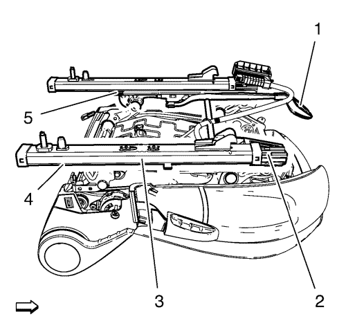
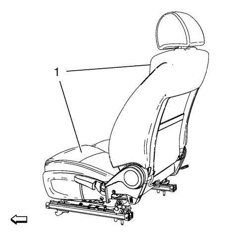
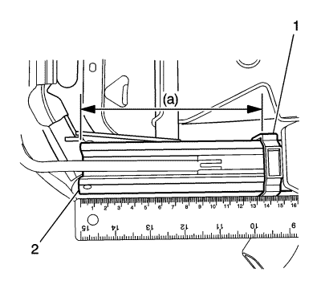
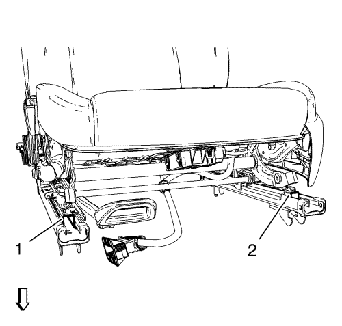

Sincronización de las guías del asiento delantero

El regulador manual hacia delante/hacia atrás está compuesto por un conjunto de guías interiores (5), un conjunto de guías exteriores (4) y una manilla ajustadora (1). Cada conjunto de guías consta de una guía superior (2) y una guía inferior (3). Ambas guías se tienen que alinear antes de instalarlas en el vehículo.
Para alinear las guías de asiento delantero, haga lo siguiente:
- Desmontar el asiento del vehículo.

- Coloque el asiento (1) boca abajo sobre una mesa, o sobre el suelo, tal como se indica.
- Suelte ambas guías empujando de la manilla ajustadora hacia abajo.
- Mientras empuja la manilla ajustadora hacia abajo, mueva cada guía inferior hacia atrás hasta que se detenga el contacto con el tope final.
- Suelte la manilla ajustadora.
- Mueva cada guía inferior hacia atrás hasta que se oiga un ruido, indicando que la guía está bloqueada por completo.
- En este momento ambas guías manuales están alineadas.

- Mida el voladizo entre el borde anterior de la caperuza de tope de plástico (1) de la guía inferior y el borde anterior de la guía superior (2). La medida de cada guía debe ser 138 mm o tan cerca como sea posible.
- Monte el asiento en el vehículo sin tocar la manilla ajustadora. Luego apriete los pernos traseros antes de ajustar las guías.
- Mientras está sentado en el asiento, mueva las guías hacia delante y hacia atrás y bloquéelas en varias posiciones. Compruebe que las guías estén alineadas.

- Inspeccione visualmente las guías, ajuste las guías superiores a nivel con la parte delantera de las guías inferiores. Compruebe que la configuración en posición bloqueada es idéntica para ambas guías interiores (1) y exteriores (2)
| © Copyright Chevrolet. All rights reserved |